◆活動舉辦期間◆
2017年10月25日(三) 17:00～11月8日(三) 11:59
◆活動概要◆
舉辦期間限定活動「萬聖節・強襲！ 魔之建築攀登者／姬路城大決戰」！
逐年特異點不斷變化，且不斷擴大的萬聖節活動會場傳來謎樣的SOS。
擔心不明發信者的SOS以及伊莉莎白的一行人，原本應該比照往年傳送到她所在的墓地才是…？
自2015年持續的萬聖節活動第3部就此完結！？
本活動的主線關卡分為前半與後半開放。
推進主線關卡，得到活動限定★4(SR)Servant「萬聖節的Alterego」吧！
「萬聖節的Alterego」有「機械伊莉醬」與「機械伊莉醬Ⅱ號機」的2種類！
但只可得到其中1位！
選擇1位來加入吧！
◆活動参加條件◆
只限通過｢第一特異點 邪龍百年戰爭 奧爾良｣的Master才能參加
享受故事的主線關卡會分成前半與後半，各於以下的時間開放。
| 時程表 | |
|---|---|
| 主線關卡前半 | 10月25日(三) 17:00～ 11月8日(三) 11:59 |
| 主線關卡後半& 機械伊莉醬選擇權獲得關卡 | 10月28日(六) 23:00～ 11月8日(三) 11:59 |
- 任務列表
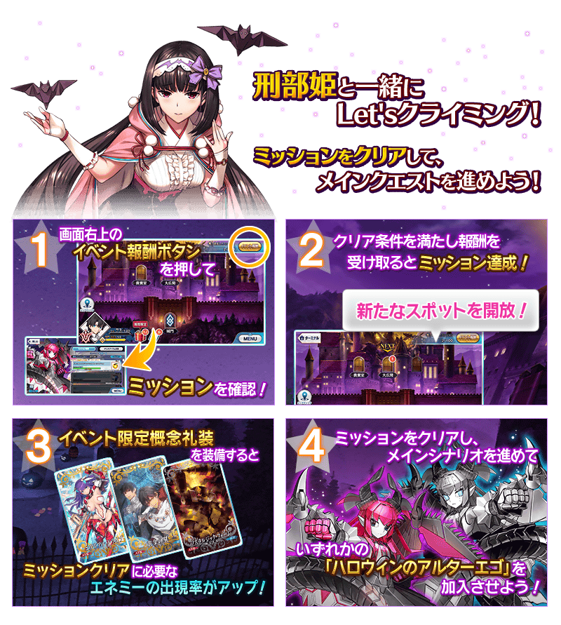
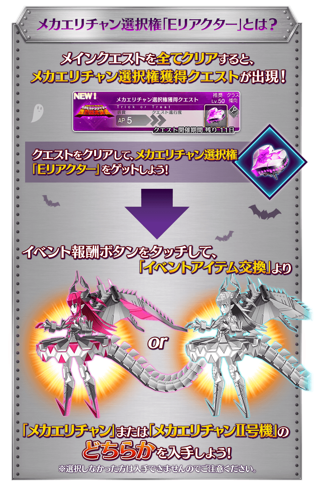※「機械伊莉醬」與「機械伊莉醬Ⅱ號機」無能力差別。
名稱、插圖、數值、戰鬥角色、語音、及絆禮裝的插圖與數值有所差異。
◆超值攻略方法・其1◆
對象Servant在「萬聖節・強襲！ 魔之建築攀登者／姬路城大決戰」的活動關卡中的攻擊威力會提升！
強化對象Servant，挑戰活動吧！
另外，被指定為筆友位的Servant在期間限定活動「萬聖節・強襲！ 魔之建築攀登者／姬路城大決戰」的主線劇本不會登場。
※各Servant的增加量不同。
◆對象Servant◆
| 職階 | 稀有度 | 名稱 |
|---|---|---|
| Saber | ★★★★ | |
| Lancer | ★★★★ | |
| Caster | ★★★★ | |
| Assassin | ★★★★★ | |
| ★★★★★ | ||
| ★★★★ | ||
| ★★★★ | ||
| ★★★★ | ||
| Berserker | ★★★★ | |
| Alterego | ★★★★ | |
| ★★★★ |
◆對象Servant・筆友位◆
| 職階 | 稀有度 | 名稱 |
|---|---|---|
| Lancer | ★★★★★ | |
| ★★★★ | ||
| Caster | ★★★★★ | |
| Berserker | ★★★★ | |
| ★★★ |
◆超值攻略方法・其2◆
裝備可在活動道具交換入手的活動限定概念禮裝「エアリアル・ドライブ」「黄金の翼」「ノスタルジック・フォーム」的話，在自由關卡中掉落活動専用道具的敵人追加出現率會提升。
※請注意於各關卡的敵人追加出現率就算顯示100％以上，效果也只有100％。
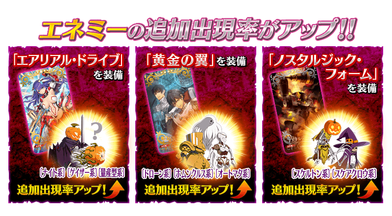
◆超值攻略方法・其3◆
裝備期間限定概念禮裝「トリック・オア・トリートメント」「ファントム・ナイト」「不思議の国から」的話，活動専用道具「光砲餅乾」「火箭硬糖」「鑽頭軟糖」各自的獲得數會提升。
※請注意於各關卡的道具掉落率並非100％。
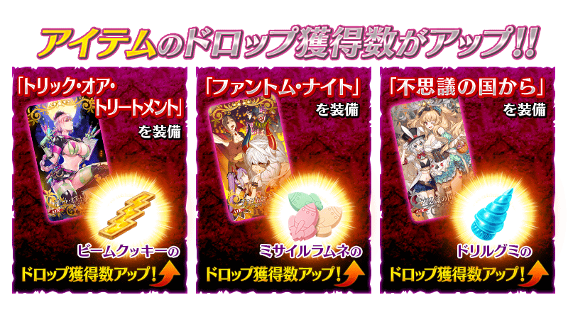
 |
★★★★★SSR |
| 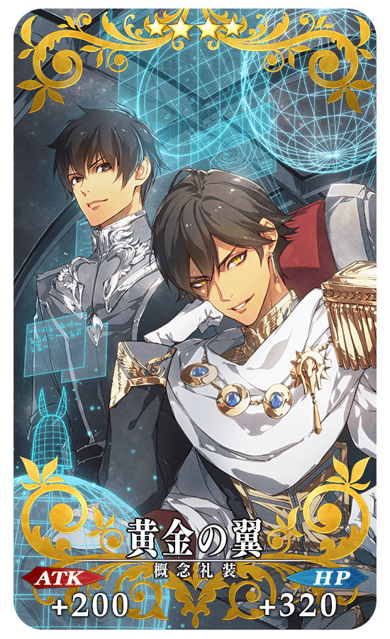 |
★★★★SR |
 |
★★★R |
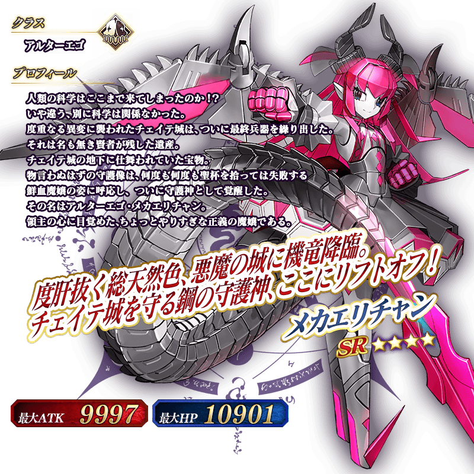
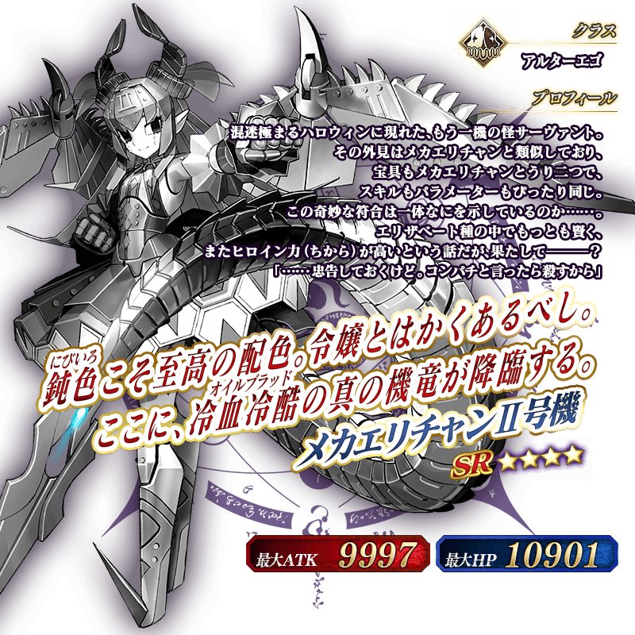
◆靈基再臨◆
使用除了靠任務報酬外無法入手的「B顆粒」，重複4次靈基再臨的話，卡面會有所變化！
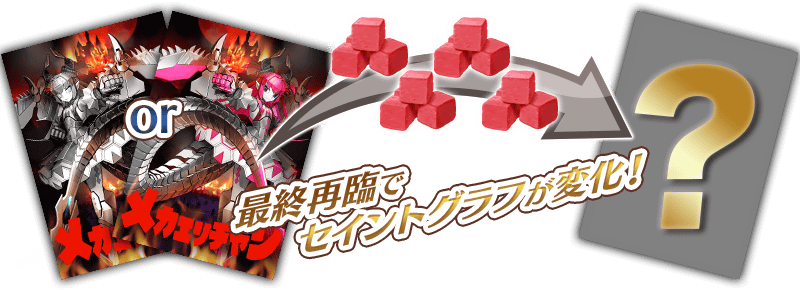
※「★4(SR)機械伊莉醬」及「★4(SR)機械伊莉醬Ⅱ號機」不會隨靈基再臨使戰鬥角色的外觀變化。
介紹機械伊莉醬及機械伊莉醬Ⅱ號機的寶具演出！
在Fate/Grand Order官方網站內的公告中，公開了「★4(SR)機械伊莉醬」「★4(SR)機械伊莉醬Ⅱ號機」的寶具演出。敬請確認。
◆交換方法◆
交換期間:2017年10月25日(三) 17:00～11月15日(三) 11:59
※交換期間結束後「光砲餅乾」「火箭硬糖」「鑽頭軟糖」「E反應器」「預備反應器」會消失。
活動専用道具可自點擊管理室(ターミナル)畫面右上「活動報酬」的「活動道具交換」畫面，交換以下的道具。
※英靈結晶・日輪之芙芙ALL★4(ATK)、英靈結晶・流星之芙芙ALL★4(HP)會在「萬聖節・強襲！ 魔之建築攀登者／姬路城大決戰」的主線關卡通過後開放。
| 光砲餅乾 | |||
|---|---|---|---|
| 交換物 | 需求數 | 限制 | 共需 |
| 300 | 2 | 600 | |
| 90 | 10 | 900 | |
| 60 | 20 | 1,200 | |
| 40 | 20 | 800 | |
| 40 | 20 | 800 | |
| 40 | 20 | 800 | |
| 40 | 20 | 800 | |
| 40 | 20 | 800 | |
| 300 | 1 | 300 | |
| 3 | 500 | 1,500 | |
| 4 | 0 | 0 | |
| 合計 | 8,500 | ||
| 火箭硬糖 | |||
|---|---|---|---|
| 交換物 | 需求數 | 限制 | 共需 |
| 300 | 2 | 600 | |
| 90 | 10 | 900 | |
| 60 | 20 | 1,200 | |
| 40 | 20 | 800 | |
| 40 | 20 | 800 | |
| 40 | 20 | 800 | |
| 40 | 20 | 800 | |
| 40 | 20 | 800 | |
| 300 | 1 | 300 | |
| 10 | 0 | 0 | |
| 合計 | 7,000 | ||
| 鑽頭軟糖 | |||
|---|---|---|---|
| 交換物 | 需求數 | 限制 | 共需 |
| 300 | 2 | 600 | |
| 60 | 20 | 1,200 | |
| 40 | 20 | 800 | |
| 30 | 30 | 900 | |
| 300 | 1 | 300 | |
| 40 | 20 | 800 | |
| 40 | 20 | 800 | |
| 8 | 100 | 800 | |
| 4 | 100 | 400 | |
| 10 | 0 | 0 | |
| 合計 | 6,600 | ||
◆能用光砲餅乾交換的道具◆
 |
【活動限定概念禮裝】 【技能強化＆靈基再臨素材】 【靈基再臨素材】 【其他道具】 |
◆能用火箭硬糖交換的道具◆
|
【活動限定概念禮裝】 【技能強化＆靈基再臨素材】 【靈基再臨素材】 【其他道具】 |
◆能用鑽頭軟糖交換的道具◆
| 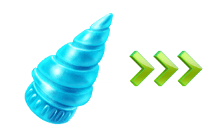 |
【活動限定概念禮裝】 【技能強化＆靈基再臨素材】 【其他道具】 |
◆能用E反應器交換的道具◆
| 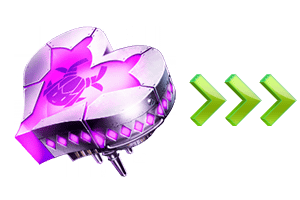 |
【活動限定Servant】 ※請注意本活動中只能入手一個E反應器。E反應器交換成「機械伊莉醬」的情況，就無法入手「機械伊莉醬Ⅱ號機」。同様地E反應器交換成「機械伊莉醬Ⅱ號機」的情況，就無法入手「機械伊莉醬」。 |
◆能用預備反應器交換的道具◆
| 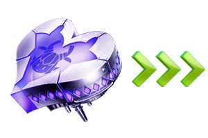 |
【活動限定Servant】 ※只有用E反應器交換的Servant為寶具等級提升的對象。 |
在「萬聖節・強襲！ 魔之建築攀登者／姬路城大決戰」，高難易度的關卡「挑戰關卡」將日後開放。
挑戰關卡就算在通過後也不會消失，能無數次挑戦，可以變更Servant和概念禮裝的組合後再次挑戰。
※關卡通過報酬、戰利品、Master經驗值、魔術禮裝經驗值、絆點數只限在初次通過時獲得。
◆挑戰關卡参加條件◆
滿足以下條件的Master才能参加。
・達成全部「萬聖節・強襲！ 魔之建築攀登者／姬路城大決戰」的任務
・通過全部「萬聖節・強襲！ 魔之建築攀登者／姬路城大決戰」的關卡
・通過「終局特異點」
◆挑戰關卡初次通過報酬◆
傳承結晶 1個
在期間限定「萬聖節・強襲！ 魔之建築攀登者／姬路城大決戰」活躍的特定Servant的強化關卡及幕間物語的消耗AP變成1/2。
藉此機會強化對象Servant吧！
※請注意曜日關卡為對象外。
◆舉辦期間◆
2017年10月23日(一) 17:00～11月8日(三) 11:59
◆強化關卡的AP消耗1/2對象Servant◆
| 職階 | 稀有度 | 名稱 |
|---|---|---|
| Lancer | ★★★★ | |
| Assassin | ★★★★ | |
| Berserker | ★★★ |
◆幕間物語的AP消耗1/2對象Servant◆
| 職階 | 稀有度 | 名稱 |
|---|---|---|
| Lancer | ★★★★ | |
| Caster | ★★★★★ | |
| Assassin | ★★★★ | |
| Berserker | ★★★★ | |
| ★★★ |
「卡米拉」的戰鬥動作及寶具演出翻新！
◆翻新時間◆
2017年10月25日(三) 17:00～
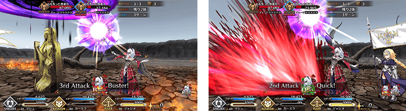
介紹翻新過的卡米拉寶具演出！
在Fate/Grand Order官方網站內的公告中，公開了「★4(SR)卡米拉」的寶具演出。敬請確認。
從在MyRoom內的マテリアル「與Servant的記録」追加絆Lv關聯語音的播放功能。
另外，配合播放的絆Lv語音，Servant的表情也會有所變化。
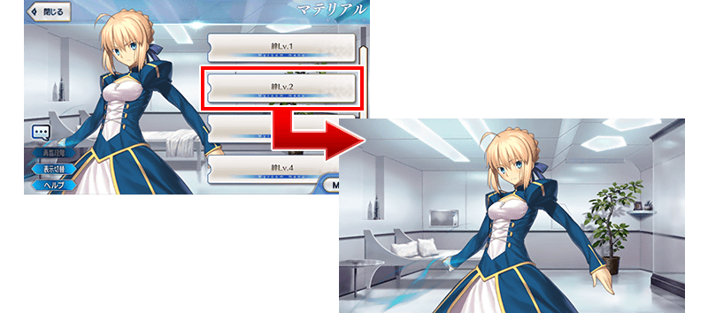
在戰鬥選單畫面追加敵人的消滅演出自動短縮功能。
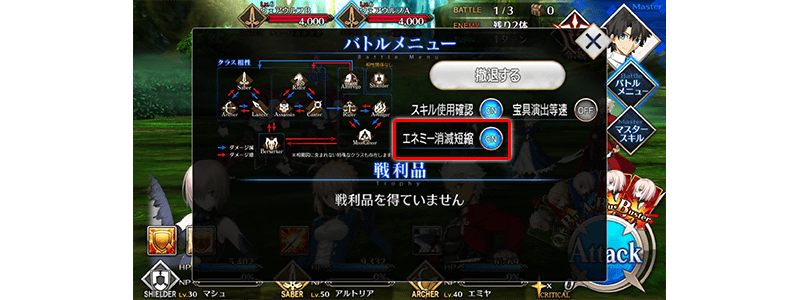
在活動中顯示的聊天視窗內，追加劇本訊息自動進行的自動播放功能。
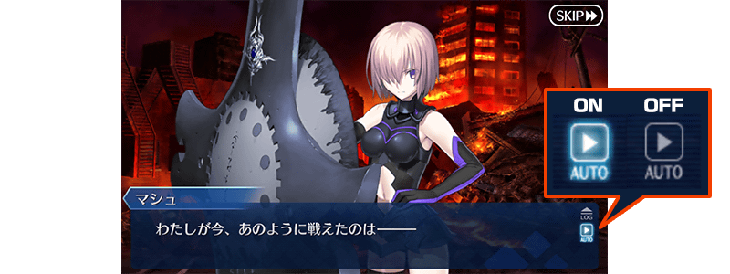

在「Servant強化」及「概念禮裝強化＆進化」畫面追加強化用素材圖示的縮小顯示功能。
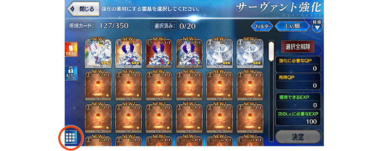

◆「萬聖節2017Pick Up召喚(每日交替)」期間◆
期間:2017年10月25日(三) 17:00～11月8日(三) 11:59
舉辦期間限定「萬聖節2017Pick Up召喚(每日交替)」！
新「★5(SSR)刑部姬」登場！
另外，於「萬聖節・強襲！ 魔之建築攀登者／姬路城大決戰」活躍的「★4(SR)伊莉莎白・巴托里(Lancer)」「★4(SR)卡米拉」「★4(SR)新宿的Assassin」「★4(SR)不夜城的Assassin」「★4(SR)黃金國的Berserker」以每日交替Pick Up！
詳情請在聖晶石召喚畫面左下的召喚詳細確認。
※新登場的Servant「★5(SSR)刑部姬」在Pick Up期間結束後，會追加到故事召喚。
裝備新登場的期間限定概念禮裝「★5(SSR)トリック・オア・トリートメント」「★4(SR)ファントム・ナイト」「★3(R)不思議の国から」的話會提升活動専用道具的掉落獲得數。
※「★3(R)不思議の国から」在Pick Up期間中，也能在友情點數召喚獲得。
Pick Up期間中，新登場Servant、Pick Up Servant、期間限定概念禮裝的出現機率提升！
10次召喚中確定1張★4(SR)以上和確定1位★3(R)以上的Servant！
※確定★4(SR)以上包含Servant和概念禮裝。
※所謂「出現機率提升」意指比同稀有度的Servant及概念禮裝出現機率更高的設定。
| 每日交替Pick Up期間 | 每日交替Pick Up內容 |
|---|---|
| 10月25日(三) 17:00～ 10月26日(四) 22:59 | 刑部姬 卡米拉 |
| 10月26日(四) 23:00～10月27日(五) 22:59 | 刑部姬 伊莉莎白・巴托里(Lancer) |
| 10月27日(五) 23:00～10月28日(六) 22:59 | 刑部姬 新宿的Assassin |
| 10月28日(六) 23:00～10月29日(日) 22:59 | 刑部姬 不夜城的Assassin |
| 10月29日(日) 23:00～10月30日(一) 22:59 | 刑部姬 黃金國的Berserker |
| 10月30日(一) 23:00～10月31日(二) 22:59 | 刑部姬 新宿的Assassin 不夜城的Assassin 黃金國的Berserker |
| 10月31日(二) 23:00～11月1日(三) 22:59 | 刑部姬 卡米拉 |
| 11月1日(三) 23:00～11月2日(四) 22:59 | 刑部姬 伊莉莎白・巴托里(Lancer) |
| 11月2日(四) 23:00～11月3日(五) 22:59 | 刑部姬 新宿的Assassin |
| 11月3日(五) 23:00～11月4日(六) 22:59 | 刑部姬 不夜城的Assassin |
| 11月4日(六) 23:00～11月5日(日) 22:59 | 刑部姬 黃金國的Berserker |
| 11月5日(日) 23:00～11月6日(一) 22:59 | 刑部姬 新宿的Assassin 不夜城的Assassin 黃金國的Berserker |
| 11月6日(一) 23:00～ 11月8日(三) 11:59 | 刑部姬 卡米拉 |
※請注意會以每日交替變更Pick Up的Servant。
介紹刑部姬的寶具演出！
在Fate/Grand Order官方網站內的公告中，公開了「★5(SSR)刑部姬」的寶具演出。敬請確認。
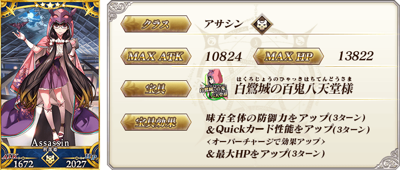

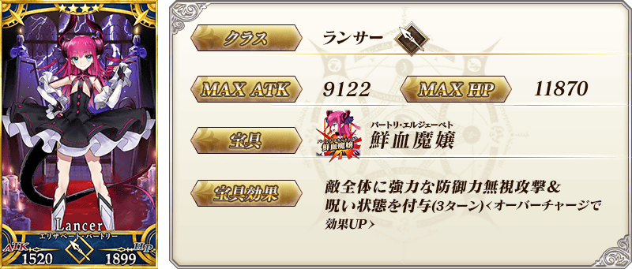
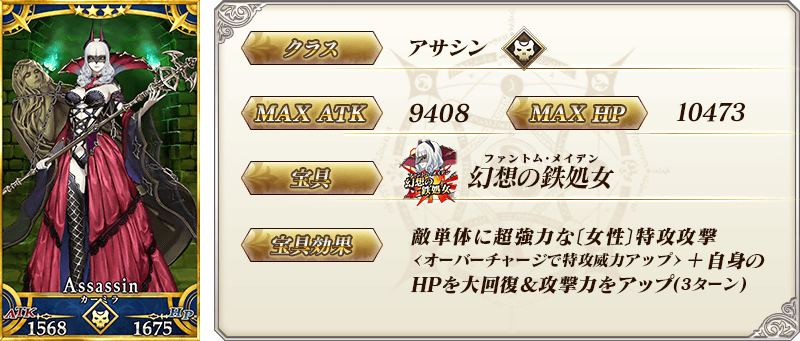


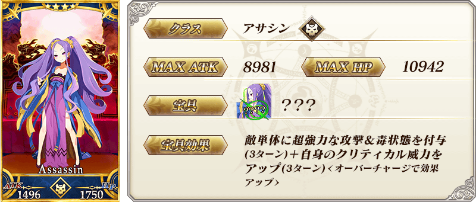

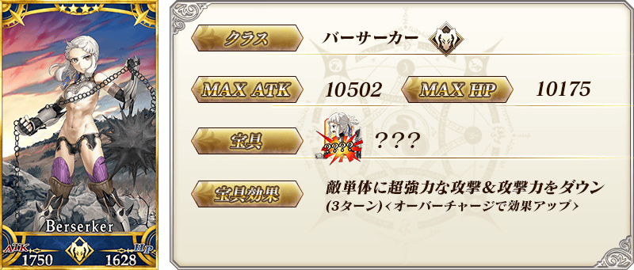
| 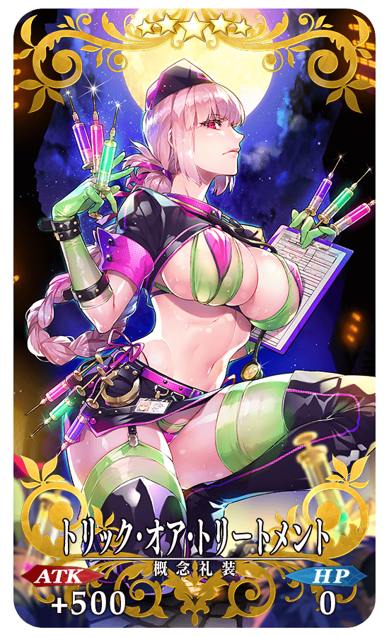 |
★★★★★SSR |
| 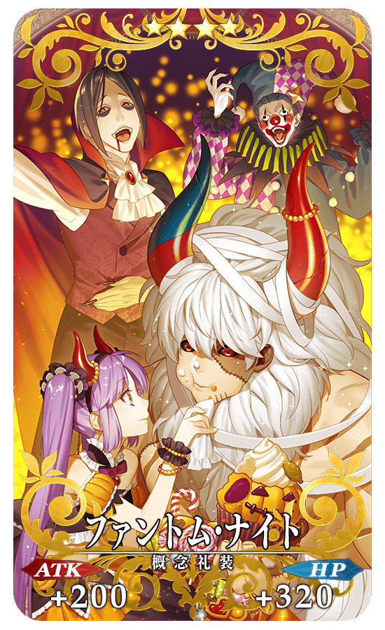 |
★★★★SR |
| 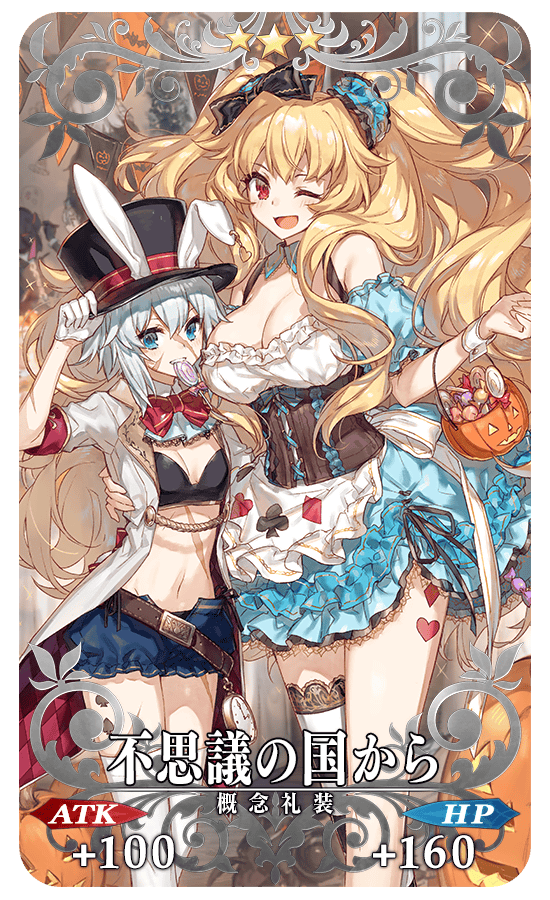 |
★★★R |
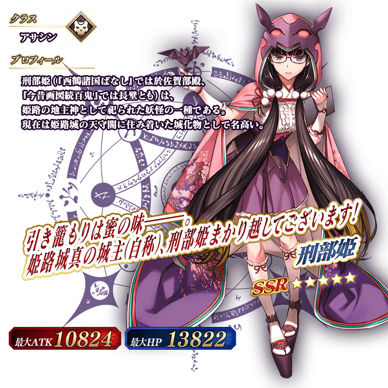